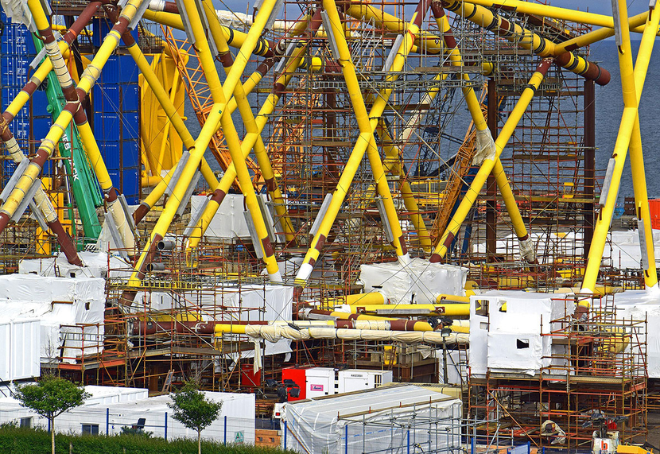
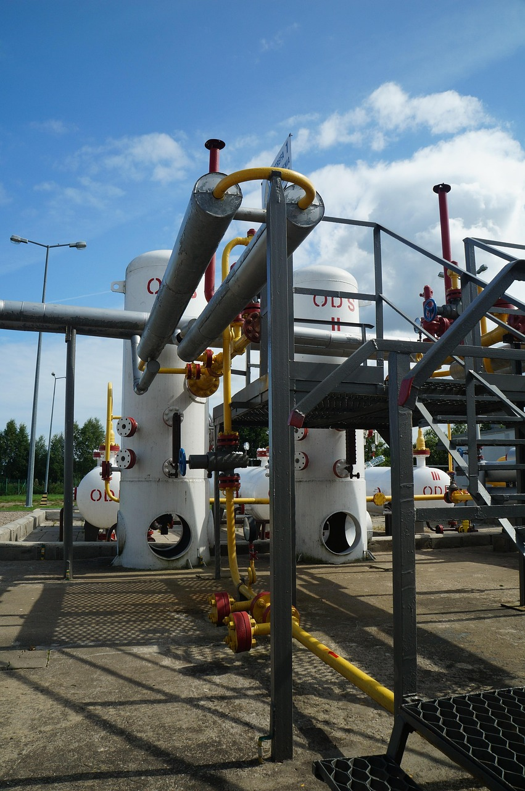

SEPARATORS
Gas and oil production separators are pressure vessels that separate the fluid constituents of a gas or
oil well into liquid and gaseous constituents. Separators are used in numerous applications, including
downstream and upstream compressors, gasoline facilities, and trapped liquid in transmission lines.
Sometimes, they’re also found on gas-sweetening units, dehydration units, and other kinds of equipment
filled with desiccant.
Separators can be installed on both offshore and onshore platforms without hassle. You’re likely to find
separators on gas or oil fields and processing facilities more than other types of equipment. Also known
as slug catchers, scrubbers, centrifuges, and FWKOs, among other names—all of them have the same central
goal of separating free liquids and gas or oil.
We can further classify separators into two primary configurations according to the vessel’s orientation
and the fluid quantity that needs to be separated. The position of the vessel can either be two-phase or
three-phase.
Classification of Different Types of Oil and Gas Separators
- #1- Horizontal Separator: Used in applications where gas pressure or gravity is
inadequate for effective separation. Equipped with tray packs and collection systems, they range
from 1m to 5m in diameter and 5m to 37m in height. They handle high flow rates and can include
features like weirs and trays.
- #2- Vertical Separators: Ideal for variable flow rates and used in onshore
platforms. These separators maintain liquid below tray levels to avoid re-entrainment.

They offer better separation but are more costly and take up more space.
- #3- Spherical Separators: Compact and inexpensive, they handle high liquid and
vapor loads. Best for slug loads and medium to large streams but are less efficient at low
liquid/gas ratios.
Phase Categories of Separators
- #1- 2-Phase Separators: Use two vessels in series. The first separates vapors from
liquids, and the second strips the remaining vapor.

They feature elevated vapor lines for efficient purging.
- #2- 3-Phase Separators: Use vertical stripping action to recover gas from complex
mixtures. Comprise two vertical chambers with steam-driven separation, suitable for full fluid
separation between other vessels.